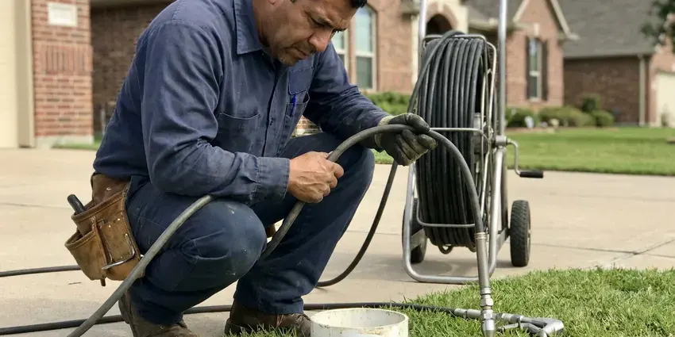

Drain Services in Bixby, OK
We clear clogged drains, sewer lines and storm drains across Bixby, OK with professional machines and upfront pricing.
- Video Camera Inspections
- Prompt Drain Unblocking
- Sewer Line Experts
- Residential and Commercial

Flowing Drains Start With One Call in Bixby, OK.
We find out why the clog formed so it does not keep returning.
Your Go-To for Drain Services in Bixby, OK
When you need dependable drain services in Bixby, JBK Plumbing is the name to trust. Our skilled technicians are equipped to handle everything from routine drain cleaning to complex sewer line replacements, providing clear pipes and real peace of mind.
Our expertise includes:
- Advanced drain camera inspections and diagnostics.
- Hydro jetting that removes grease, scale and tree roots
- Expert sewer line repair and trenchless replacement.

Additional Drain Services Services in Bixby, OK
From stubborn kitchen clogs to main sewer backups, our drain services in Bixby, OK restore full flow fast and keep it that way.




Hydro Jetting service for Bixby homeowners


Customers
Why Choose JBK Plumbing for Drain Services in Bixby, OK?
Choosing JBK Plumbing means you are getting local experts familiar with Oklahoma plumbing challenges, from hard water scale to tree root intrusion. We focus on effective, long-term solutions, not just quick fixes.
- Local Knowledge, We understand how moving soil affects sewer lines, and how local weather impacts drain systems.
- Clear Pricing, You get an upfront price before we run a single foot of cable.
- Right Equipment, We carry cable machines, jetters and cameras so we can handle almost any clog on the first visit.
Citywide Coverage
From the bustling downtown areas to the quiet suburban streets of Bixby, our drain services cover the entire area. We are dedicated to providing prompt and efficient plumbing solutions to every homeowner in Bixby.
Experienced Team
Our plumbers clear drains every day and know when to use a small auger, a sectional machine or a jetter. That judgment prevents damage to older pipe.
Safety-First Approach
At JBK Plumbing, safety is our first priority in every drain service we perform. We adhere strictly to all local Bixby and Oklahoma plumbing codes, ensuring that every repair and installation is done to the highest safety and quality standards.
Trusted Certified Bixby Plumbing Services Professionals
At JBK Plumbing, we take pride in providing certified plumbing services throughout Bixby, OK. Backed by recognized industry credentials, our experienced plumbers combine technical skill with genuine customer care. Whether it is repair, installation, or maintenance, we follow strict safety and quality standards to deliver long-lasting results you can trust.
Call Us Now PHCC Plumbing Contractor Recognition
PHCC Plumbing Contractor Recognition Better Business Bureau (BBB) Accreditation
Better Business Bureau (BBB) Accreditation Angi Certified Pro
Angi Certified Pro ISO 9001 Quality Management Certification
ISO 9001 Quality Management CertificationComprehensive Drain Services in Bixby, OK
Storm Drain Cleaning for Bixby, OK
Severe thunderstorms and heavy spring rain can cause flash flooding in Oklahoma, overwhelming drainage and backing up sewers. Properly functioning storm drains are essential for preventing property damage during heavy rains. JBK Plumbing offers storm drain cleaning to remove leaves, dirt, and debris that can cause flooding around your home or business in Bixby, OK. Keeping these drains clear helps protect your foundation and landscaping from water accumulation, which matters even more where soil swells when wet.

Sewer Cleaning & Hydro Jetting in Bixby, OK
Main sewer line issues can affect all drains in your Bixby home. Our sewer cleaning services include thorough inspections to pinpoint blockages, often caused by tree roots, sludge, or foreign objects. For the toughest clogs, we use hydro jetting, which uses high-pressure water streams to scour the inside of your pipes, removing even hardened scale and persistent debris. This method is very effective for complete pipe restoration.
Expert Sewer Line Replacement in Bixby
Sometimes, a sewer line is beyond repair due to extensive damage from tree roots, corrosion, or ground shifts. Our sewer line replacement services in Bixby offer both traditional excavation and trenchless options. Trenchless methods minimize disruption to your yard and landscaping, which is often a preferred solution for homeowners. We ensure all replacements meet current Bixby plumbing codes for durability and longevity.
Comprehensive Drain Cleaning in Bixby
Slow or stopped drains are a frequent headache for homeowners in Bixby. Our drain cleaning service uses various methods, including snaking and augering, to remove hair, grease, soap scum, and other obstructions. We can clear clogs from sinks, tubs, showers, and floor drains, restoring proper flow fast. Many rural homes rely on private wells, and some groundwater carries high mineral content that calls for softening or filtration. We also address mineral buildup inside pipes, which hard water can make much worse.
Emergency Drain Unblocking in Bixby, OK
A completely blocked drain or a sewage backup is an emergency that requires urgent attention. JBK Plumbing provides rapid response for emergency drain unblocking services in Bixby, OK. We understand that these situations can cause real stress and potential health hazards. Our technicians are available to quickly diagnose and clear severe blockages, restoring functionality and peace of mind to your home.
Preventative Drain Maintenance in Bixby
Regular drain maintenance can prevent most major clogs and lengthen the life of your plumbing system. For homes in Bixby, especially those with older pipes or frequent issues with hard water and tree roots, scheduled cleaning can save you from costly emergencies. We offer tailored maintenance plans that include inspections and targeted cleaning to keep your drains flowing smoothly year-round. This proactive approach is highly recommended.
Emergency Drain Service in Bixby, OK
Sewage coming up through a shower drain or an overflowing toilet that will not stop is an emergency. Stop running water in the house and call (405) 507-8396 right away. We respond with a truck stocked for main line clearing and camera inspection. Once the line is clear, we help with cleanup and explain what caused the backup. Fast service limits damage to floors and drywall.

Advanced Sewer Cleaning in Bixby, OK
When the problem lies deeper within your main sewer line, our sewer cleaning services are essential. We use specialized equipment to clear blockages caused by tree roots, sludge, and debris that accumulate over time. Ignoring sewer line issues can lead to whole-house backups throughout your home, a situation no homeowner in Bixby, OK wants to face. Our goal is to prevent such emergencies with regular cleaning.
Drain Services Near Me in Bixby, OK
We are committed to serving our neighbors in Bixby with fast, professional drain services. You can rely on JBK Plumbing for timely arrivals and effective solutions, ensuring your home's plumbing issues are resolved efficiently, no matter where you are in the area.
If you are searching for drain services near me, you probably need help today, not next week. JBK Plumbing serves Bixby with trucks equipped for cable cleaning, jetting and camera inspection. We offer same-day appointments for most clogs.
JBK Plumbing at a Glance
- Licensed and insured plumbers serving Bixby, OK
- Same-day appointments and 24/7 emergency response
- Upfront, flat-rate pricing before work begins
- 4.8-star rated by 318+ Oklahoma customers
Bixby Map
Bixby Information
- Population
- 30,698
- Area codes
- Local
- Service area
- Bixby and communities within 40 miles
- Nearby
- Broken Arrow, Tulsa, Owasso, Muskogee
Effective drain services are critical for homes in Bixby, OK, where shifting soil can stress plumbing lines and mineral-rich water can leave heavy buildup inside pipes.
Expert Services
Trust our professionals for reliable JBK Plumbing solutions in Bixby, OK.
Our Specialized Plumbing Services in Bixby, OK
At JBK Plumbing, we provide a complete range of plumbing services across Bixby, OK. From leak detection to full system installations, our team ensures fast, precise, and affordable service for both residential and commercial properties. Explore our core services below:


How Our Drain Services Process Works in Bixby, OK
From initial contact to final cleanup, JBK Plumbing follows a clear process to deliver effective drain solutions for our Bixby customers.
Request a Quote
Call (405) 507-8396 and tell us which drains are slow or backing up. We give you an upfront price and a same-day window when available.
Diagnose the Clog
We check which fixtures are affected and locate the nearest cleanout. A camera inspection is available for repeat or main line problems.
Clear and Test
We clear the line with a cable or jetter and run water to confirm flow. Then we recommend any maintenance that will keep it clear.
Frequently Asked Questions About Drain Services in Bixby
The cost of drain cleaning in Bixby can vary a great deal based on the complexity of the clog and the method required. Simple drain snaking might range from $150 to $350, while hydro jetting or main sewer line clearing could be $400 to $800 or more. We provide a detailed estimate after inspecting the issue.
When it comes to drain services, our focus is on clearing and repairing the pipes themselves, rather than specific fixture brands. However, our technicians are familiar with all major plumbing fixture brands like Moen, Delta, Kohler, and American Standard, and can address any issues related to their drain assemblies during service.
Our technicians are experienced with all major brands of plumbing fixtures and drain components, including Moen, Delta, Kohler, American Standard, and more. We ensure any replacement parts are a proper match and high quality.
Hydro jetting is a thorough drain cleaning method that uses high-pressure water to clear blockages and scour the inside of pipes. It's often necessary for severe clogs, tree root intrusions, grease buildup, or when traditional snaking isn't effective, particularly for main sewer lines.
Tree roots are naturally attracted to the moisture and nutrients inside sewer lines, and dry spells can make them seek out any available water source. Tiny cracks or loose joints in older sewer pipes provide an entry point, allowing roots to grow and eventually block the line. Expansive red clay is common in Oklahoma, swelling when wet and shrinking in drought, which shifts foundations and buried pipe. Shifting soil can also cause pipe movement, creating these access points.
Traditional sewer line replacement can involve digging trenches, which can be messy. However, we also offer trenchless sewer repair options, like pipe bursting or pipe lining, which limit excavation and disruption to your Bixby property.
Several slow drains at once, gurgling toilets and water backing up into a tub when the toilet flushes are telltale signs. Sewage odors near the cleanout are another clue.
Minor drain cleaning usually does not require a permit. However, major work like sewer line repair or replacement, especially if it involves excavation or connecting to the city's main sewer, typically requires permits from the local building department. We will advise you and take care of the necessary permitting.
What People Are Saying About Our Plumbing Experts?

Mark T.
When our office needed drain cleaning, JBK Plumbing provided quick, reliable service. The plumber arrived on time and made sure every drain flowed perfectly before leaving. Very satisfied.
Drain Cleaning · Bartlesville, OK
Laura S.
I scheduled a water heater replacement, and the team made the process smooth and affordable. The new unit works perfectly, and they cleaned up after completing the job.
Water Heater Replacement · Bartlesville, OK
Daniel K.
A pipe burst at 11 pm and they actually answered. The plumber showed up within the hour, shut everything down, and had us back to normal the next morning. Could not ask for more.
Emergency Plumbing · Bixby, OK
Patricia H.
We had a slab leak that two other companies could not find. JBK Plumbing located it in under an hour, explained our options, and the price matched the quote to the dollar.
Slab Leak Repair · Bixby, OK
Emily R.
I called JBK Plumbing for plumbing repair, and the technician was fast, polite, and thorough. They explained the problem clearly and fixed it the same day. I will definitely hire them again. Highly recommended!
Plumbing Repair · Stillwater, OK
James P.
Our commercial plumbing system had a leak under the sink, and JBK Plumbing handled it professionally. The plumbers arrived quickly and restored everything without disruption to our customers.
Commercial Plumbing · Bartlesville, OK